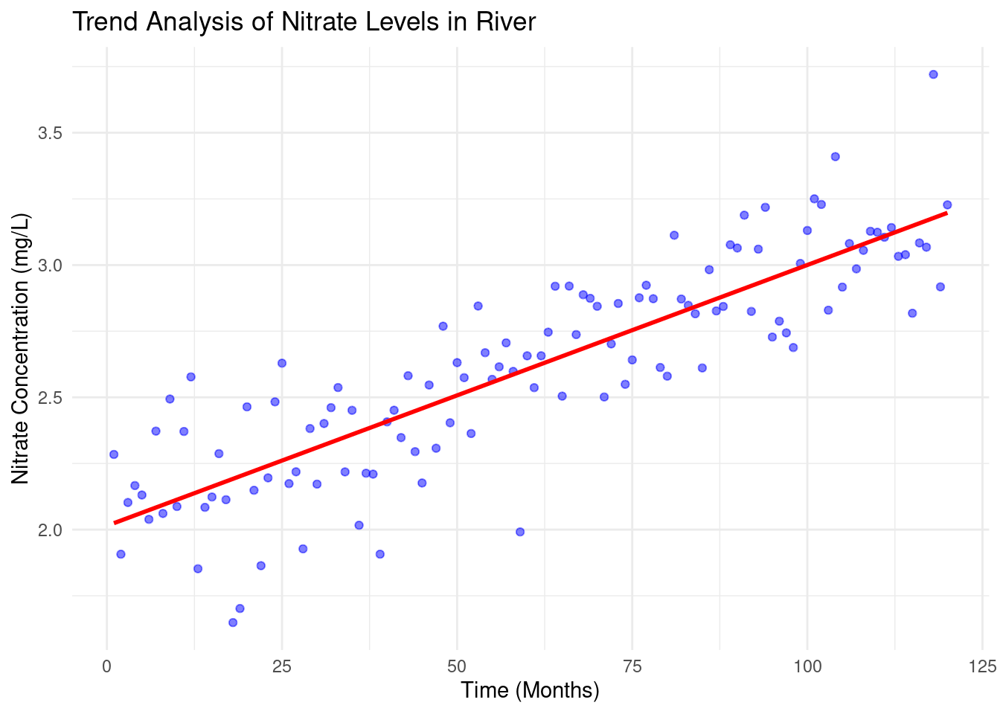

Chapter 3 TEST FOR AUTOCORRELATION AND TEMPORAL EFFECTS
Environment Data is not always stable or stationary over time or space and is frequently subjected to sustained or cyclical change to the affecting factors. These concepts will help us understand the temporal effects better;
Temporal Trends: refer to changes in a variable or phenomenon over time. Consider monitoring soil nitrogen levels in agricultural field over several years. There might be temporal rise of nitrogen immediately after application of nitrogen-based fertilizer and return back to almost the average state after time. Although there might be a general increase in soil nitrogen levels, but they won’t match the immediate spikes after fertilizer application.
Autocorrelation or serial correlation: is the correlation between data values of the same variable. Positive autocorrelation means that values close in time/space tend to be similar while negative autocorrelation means that they tend to differ.
Monotonic trend: this is a trend that is in one direction, either constantly upward or downwards. A good example are the levels of carbon dioxide(CO2) concentrations in the atmosphere, they have been consistently rising due to industrial activities and deforestation.
Cyclic or Seasonal trend refer to patterns that repeat at regular intervals such as daily ,hourly or annually. These trends are usually affected by natural cycles, human activities or climatic conditions. For instance, these trends are evident in phosphorous levels in water bodies that might increase during rainy seasons due agricultural runoff and decline during dry seasons.
When testing for autocorrelation and temporal effects the data samples are assumed to have values that are independent or uncorrelated, and identically or similarly distributed. The data are said to be autocorrelated or serially correlated when this assumption is violated.
These are the tests that are used to check for autocorrelation:
Sample Autocorrelation Function(ACF): used for a single time series where data is normally distributed.
Rank von Neumann ratio test used when the data samples evidence of nonnormality.
The complete block design ANOVA or Friedman test is used for multiple different data samples for instance testing the concentration of ground water contaminant from multiple monitoring wells at a site.
3.1 Test for Autocorrelation Using the Sample Autocorrelation Function
Before testing for autocorrelation using the ACF method, the data sample should be;
- normally distributed.
- stationary(that is, not trending).
- free of outliers.
- containing atleast 10 to 12 observations.
… And here is how ACf is computed.
- Arrange the data in lagged data pairs (\(x_{i}, x_{i + k}\)), for \(i\) = 1, 2, ….(\(n-k\)), where;
- \(n\) is the size of the data samples(number of data values therein).
- \(k\) is the lag. i.e number of sampling events dates separating one data value in the pair from the second value. For instance a lag of 1 shows that the two value pairs were collected in consecutive time intervals(e.g days) while lag shows that the data value pairs were collected every each time interval
- Calculate the sample Autocorrelation coefficient \[r_k = {{\sum^{n-k}_{i=1}(x_i-x^!)(x_{i+k}- x^!)}\over{\sum^n_{i=1}(x_i - x^!)^2}}\] where;
- \(n\) is the data sample size.
- \(k\) is the lag
- \(x^!\) is the data sample mean
- \(x_{i}, x_{i + k}\) are the components of the data pairs formed based on the lag.
If \(k\) = 1, the sample autocorrelation coefficient, \(r_1\) is referred to as the first order sample autocorrelation coefficient. If \(k\) = 2, \(r_2\) is the second order coefficient, and so on.
Lets breakdown the possible results of autocorrelation;
- \(r_0\) = 1: Autocorrelation at lag 0 is always one because a value is perfectly correlated with itself.
- Random Data: if the data is random, most autocorrelation coefficients will be close to zero, and will decrease further as the lag increases.
- Autocorrelated Data: If there’s autocorrelation, some coefficients(\(r_k\)) will be significantly larger than zero, but their strength decreases with higher lags.
- Trend in data: If there is a trend, coefficients wont diminish, showing persistent correlation.
As a summary, the normally distributed data, \(r_k\) should be close to zero if there is no correlation. At a 95% confidence level, autocorrelation is insignificant if no \(r_k\) exceeds the threshold \(2\over{\sqrt{n}}\). There result of each autocorrelation are therefore plotted in a correlogram and the confidence limits are show as the horizontal lines.
Try it!
3.2 An Example on Site-Wide Temporal Effects
Analysis of Site-Wide Temporal Effects on Groundwater Manganese Concentrations
Generate the data
# Load necessary libraries
library(dplyr)
# Set seed for reproducibility
set.seed(42)
# Generate synthetic manganese concentration data
Mn_values <- c(3.5, 2.8, 4.1, 3.9, 5.2, 4.8, 6.0, 5.7, # Well 1
3.2, 2.5, 3.8, 3.7, 5.0, 4.6, 5.8, 5.5, # Well 2
3.6, 3.0, 4.2, 4.0, 5.3, 4.9, 6.1, 5.8, # Well 3
3.3, 2.6, 3.9, 3.8, 5.1, 4.7, 5.9, 5.6) # Well 4
# Create a data frame
Mn2Data8 <- data.frame(
Mn = Mn_values,
Location = rep(c("Well1", "Well2", "Well3", "Well4"), each = 8),
Time = rep(paste0("Q", 1:8), times = 4)
)
# Convert factors
Mn2Data8$Location <- as.factor(Mn2Data8$Location)
Mn2Data8$Time <- as.factor(Mn2Data8$Time)
# Display the first few rows
head(Mn2Data8)## Mn Location Time
## 1 3.5 Well1 Q1
## 2 2.8 Well1 Q2
## 3 4.1 Well1 Q3
## 4 3.9 Well1 Q4
## 5 5.2 Well1 Q5
## 6 4.8 Well1 Q6Groundwater manganese concentrations have been monitored quarterly across four wells for a period of two years (eight quarters). The data set above, 2009), includes measurements from each well per quarter. The goal is to determine whether there is a site-wide temporal trend in manganese concentrations over time.
To establish whether a time trend exists, we must first check for spatial variability among the four wells. If the manganese concentrations do not significantly differ across wells, we can then assess whether concentrations change over time.
Here is the process that will be followed;
- Check for Spatial Variability (Homogeneity) by;
- Testing whether the means or medians of the four well datasets are statistically equal.
- Checking If the datasets show normality and homogeneity of variances, a two-way ANOVA without replication (Complete Block Design) is appropriate. Otherwise, the non-parametric Friedman test is used.
- Check for Temporal Trends by;
- Checking for a significant trend over time if no spatial variability is found.
- A two-way ANOVA is performed again, switching the roles of
TimeandLocationwhere initiallyTimewas the factor of interest andLocationas a blocking factor.
The ANOVA model follows the equation: \[{Y_{ij}}={\mu + \alpha_i + \beta_j + \epsilon_{ij}}\] Where:
- \(Y_{ij}\) is the Manganese concentration
- \(\mu\) is the overall mean
- \(\alpha_i\) represents the effect of the well (location)
- \(\beta_j\) represents the effect of time (quarter)
- \(\epsilon_{ij}\) is the error term
The hypothesis tests:
- For spatial variability: \(H_0:\mu_1=\mu_2=\mu_3=\mu_4\) (no significant difference between wells)
- For temporal trend \(H_0:\mu_{Q1}=\mu_{Q2}=...=\mu_{Q8}\)(no significant difference across quarters)
Check for variability
# Step 1: Check for Spatial Variability
Mn2.anova1 <- aov(Mn ~ Location + Time, data = Mn2Data8)
summary(Mn2.anova1)## Df Sum Sq Mean Sq F value Pr(>F)
## Location 3 0.57 0.189 125.5 1.44e-13 ***
## Time 7 35.63 5.091 3387.1 < 2e-16 ***
## Residuals 21 0.03 0.002
## ---
## Signif. codes: 0 '***' 0.001 '**' 0.01 '*' 0.05 '.' 0.1 ' ' 1Results;
- Location: p_value(denoted as Pr(>F) on the table above) is less than 0.05 - therefore there is a significant spatial variability
- Time: p_value is less than 0.05 - there is a siginfant temporal trend.
If there was no spatial variability we could have proceed to test the time trend. However, lets just proceed to show you how it is done.
Check the code below
# Step 2: Check for Temporal Effects
Mn2.anova2 <- aov(Mn ~ Time + Location, data = Mn2Data8)
summary(Mn2.anova2)## Df Sum Sq Mean Sq F value Pr(>F)
## Time 7 35.63 5.091 3387.1 < 2e-16 ***
## Location 3 0.57 0.189 125.5 1.44e-13 ***
## Residuals 21 0.03 0.002
## ---
## Signif. codes: 0 '***' 0.001 '**' 0.01 '*' 0.05 '.' 0.1 ' ' 1P-value is far much less than 0.05. The results confirm that manganese concentrations vary significantly over time.
Practical Exercise
Solution
________________________________________________________________________________
3.3 TESTS FOR TREND
When working with data that has a time component (i.e., data collected at different points in time), a time series plot is a useful first step in exploring whether the values are randomly distributed or if a trend or pattern exists. If the plot suggests a trend, the next step is to determine whether this trend is statistically significant or just a random occurrence.
To assess this, we can use parametric or nonparametric methods, depending on whether the data meets certain assumptions such as normality, absence of outliers, and constant variance.
Parametric methods assume that the data follows a specific distribution (usually normal). These methods rely on parameters like mean and variance. A common parametric approach for trend detection is simple linear regression.
Nonparametric methods do not require the data to follow any particular distribution, making them more flexible. Two widely used nonparametric trend tests are:
- The Mann-Kendall test, which determines whether a trend exists but does not measure its magnitude.
- The Theil-Sen method, which not only detects trends but also estimates the slope (rate of change) of the trend line.
In some cases, external factors like temperature or streamflow rate can influence the trend results. If these factors are not accounted for, they may lead to incorrect conclusions. Therefore, it is important to adjust for such variables before performing trend analysis.
3.3.1 Parametric Test for Trends - Simple Linear Regression
Simple linear regression is a commonly used parametric method for detecting trends over time. It involves plotting data against time and fitting a best-fit regression line to model the relationship. The equation for this regression line is: \[Y_t = \beta_0 + \beta_1t + \epsilon_t\] Where:
- \(Y_t\) represents the observed data value at time \(t\)(e.g., pollutant concentration, species population, or temperature).
- \(\beta_0\) is the intercept (initial value at \(t=0\))
- \(\beta_1\) is the slope coefficient, indicating the rate of change over time.
- \(\epsilon_t\) represents random errors.
A statistically significant positive slope(\(\beta_1>0\)) suggests an increasing trend, while a negative slope(\(\beta_1<0\)) indicates a declining trend.
To determine if the trend is significant, we set up the following hypotheses:
- Null hypothesis(\(H_0\)): There is no trend; the true slope is zero (\(\beta_1=0\)).
- Alternative Hypothesis (\(H_a\)): A trend exists; the slope is not zero (\(\beta_1≠0\)).
The t-test is used to check the significance of \(\beta_1\): \[{t} = {{\hat\beta_1}\over{SE(\hat\beta_1)}}\] Where \(\hat\beta_1\) is the setimated slope and \(SE(\hat\beta_1)\) is its standard error. The p-value associated with this test determines whether we reject \(H_0\) at a given significance level \(\alpha\) (typically 0.05)
Here are the assumptions must be satisfied for valid results;
- Linearity: The trend should be approximately linear.
- Independence : Observations should be independent over time.
- Normality of Residuals: The residuals (differences between actual and predicted values) should follow a normal distribution.
- Homoscedacity: Variance of residuals should be constant over time.
- Sufficient Data Points: At least 8–10 observations are recommended.
Try it!: Detecting Trends in River Nitrate Levels
n ecological studies, trend analysis is often applied to environmental parameters such as nitrate concentration in rivers over time. The dataset below simulates nitrate levels (mg/L) measured monthly over several years.
## Loading required package: zoo##
## Attaching package: 'zoo'## The following objects are masked from 'package:base':
##
## as.Date, as.Date.numeric# Simulated ecological data: Nitrate levels in a river over time
set.seed(42)
time <- 1:120 # 10 years of monthly data
nitrate_levels <- 2 + 0.01 * time + rnorm(120, mean = 0, sd = 0.2) # Simulated increasing trend
# Create a data frame
data <- data.frame(time = time, nitrate = nitrate_levels)
# Fit linear regression model
model <- lm(nitrate ~ time, data = data)
# Summary of the regression
summary(model)##
## Call:
## lm(formula = nitrate ~ time, data = data)
##
## Residuals:
## Min 1Q Median 3Q Max
## -0.60476 -0.12832 0.01333 0.12895 0.54269
##
## Coefficients:
## Estimate Std. Error t value Pr(>|t|)
## (Intercept) 2.0145997 0.0382374 52.69 <2e-16 ***
## time 0.0098567 0.0005485 17.97 <2e-16 ***
## ---
## Signif. codes: 0 '***' 0.001 '**' 0.01 '*' 0.05 '.' 0.1 ' ' 1
##
## Residual standard error: 0.2081 on 118 degrees of freedom
## Multiple R-squared: 0.7324, Adjusted R-squared: 0.7301
## F-statistic: 323 on 1 and 118 DF, p-value: < 2.2e-16# Extract p-value and slope
slope <- coef(model)[2]
p_value <- summary(model)$coefficients[2,4]
# Decision based on p-value
alpha <- 0.05
if (p_value < alpha) {
print(paste("Significant trend detected with slope:", round(slope, 4)))
} else {
print("No significant trend detected.")
}## [1] "Significant trend detected with slope: 0.0099"# Plot the trend with regression line
ggplot(data, aes(x = time, y = nitrate)) +
geom_point(color = "blue", alpha = 0.5) +
geom_smooth(method = "lm", color = "red", se = FALSE) +
labs(title = "Trend Analysis of Nitrate Levels in River",
x = "Time (Months)", y = "Nitrate Concentration (mg/L)") +
theme_minimal()## `geom_smooth()` using formula = 'y ~ x'
Here is how we interpret the regression output:
- Intercept\((\beta_0)\) = 2.0146 (baseline concentration)
- Slope\(\beta_1\) = 0.0099 (indicates an increasing trend in nitrate levels).
- p-value<0.001 (significant trend detected).
- R-squared = 0.7324, meaning 73.2% of the variability in nitrate concentration is explained by time.
This suggests that nitrate levels are increasing over time, which could indicate environmental pollution or agricultural runoff.
Practical Exercise
Solution
________________________________________________________________________________
3.3.2 Nonparametric Test for Trends
3.3.2.1 Mann–Kendall Test and Seasonal Mann–Kendall Test
In ecological statistics, detecting trends in environmental data is crucial for understanding changes over time. However, traditional parametric tests such as linear regression require data to meet assumptions like normality and homoscedasticity, which are often violated in ecological datasets. Nonparametric tests like the Mann-Kendall (MK) test and Seasonal Mann-Kendall (SMK) test offer robust alternatives that do not assume any specific data distribution.
3.3.2.1.1 Mann-Kendall Trend Test
The Mann-Kendall test is a rank-based nonparametric test used to detect a monotonic trend in time-series data, whether linear or nonlinear.
Given a dataset $ X = {x_1, x_2, …, x_n} $, the Mann-Kendall test examines all possible pairs $ x_i, x_j $ where $ i < j $, and assigns a score based on their relative magnitudes:
\[S = \sum_{i=1}^{n-1} \sum_{j=i+1}^{n} \text{sgn}(x_j - x_i)\]
where the sign function is defined as:
\[ \text{sgn}(x_j - x_i) = \begin{cases} +1, & \text{if } x_j > x_i \\ 0, & \text{if } x_j = x_i \\ -1, & \text{if } x_j < x_i \end{cases} \]
A positive \(S\) indicates an increasing trend, while a negative \(S\) suggests a decreasing trend.
For large samples (\(n>10\)), the test statistic \(S\) follows an approximately normal distribution with mean 0 and variance:
\[{Var(S)} = {{n(n-1)(2n-5)- \sum_t t(t-1)(2t+5)}\over{18}}\] Where t represents the number of tied ranks in the data set.
The standardized test statistic (Z-score) is given by:
$$ {Z} =
\[\begin{cases} {{s-1}\over{Var(S)}}, \text if \space S>0\\ 0, \text if \space S = 0\\ {{s-1}\over{Var(S)}}, \text if \space S<0 \end{cases}\]$$
Lets formulate the hypothesis;
- Null hypothesis(\(H_0\)): No trend in the data.
- Alternate Hypothesis(\(H_1\)): Presence of a monotonic trend
- Decision Rule: Reject $H_0 if |Z|>Z_{a/2} $ where \(Z_{a/2}\) is the critical value from the normal distribution for a given significance level(e.g, 1.96 for \(\alpha = 0.05\))
Try it: Analysis for the monthly average temperature
A package trend is needed for this practical and can be installed by;
install.packages("trend")Run the analysis
library(trend)
# Example dataset: Monthly average temperature
data <- c(12.4, 12.8, 13.1, 12.9, 13.5, 13.7, 13.9, 14.0, 14.1, 14.5, 14.8, 15.0)
time <- seq(2000, 2011)
# Perform Mann-Kendall Test
mk_result <- mk.test(data)
print(mk_result)##
## Mann-Kendall trend test
##
## data: data
## z = 4.3201, n = 12, p-value = 1.56e-05
## alternative hypothesis: true S is not equal to 0
## sample estimates:
## S varS tau
## 64.000000 212.666667 0.9696973.3.2.1.2 Seasonal Mann-Kendall (SMK) Test
Environmental data often exhibit seasonality, meaning the trend might be masked by cyclic variations. The Seasonal Mann-Kendall test adjusts for seasonality by performing the Mann-Kendall test on subsets of data corresponding to different seasons.
Here is how to perform it;
- Partition data into seasonal subsets (e.g, monthly data grouped by month across years)
- Apply the Mann-Kendall test to each seasonal subset/.
- Sum the S-values from each season to get an overall trend statistic
Try it! Monthly pollutant concentration across five years
A package Kendall is required for this analysis and can be installed by;
install.packages("Kendall")Run the analysis
# Load the library
library(Kendall)
# Example dataset: Monthly pollutant concentrations across 5 years
set.seed(123)
dates <- seq(as.Date("2010-01-01"), as.Date("2014-12-01"), by="month")
data_values <- rnorm(length(dates), mean=50, sd=5)
seasonal_data <- data.frame(Date=dates, Value=data_values)
# Perform Seasonal Mann-Kendall Test
#smk_result <- SeasonalMannKendall(seasonal_data$Value ~ #as.POSIXlt(seasonal_data$Date)$mon + #as.POSIXlt(seasonal_data$Date)$year)
#print(smk_result)Practical Exercise
Solution
________________________________________________________________________________